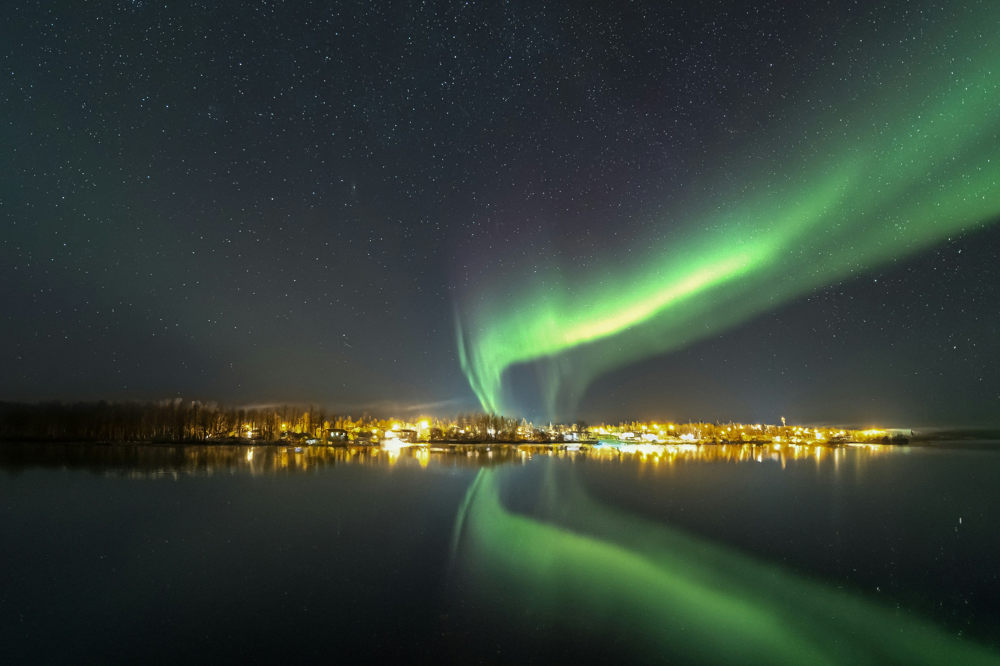

Chasing Sunsets in Santorini

Octobar 14, 2024 | 12 comments
There's nothing quite like the golden hour in Santorini. The light, the ocean, and the feeling of awe that hits you—it all feels surreal. Here's how one evening changed my perspective on slowing down.
CONTINUE READING
Learning to Surf in Bali
Wiping out was part of the process, but every wave caught was a victory. Surfing in Bali was both humbling and addictive.
CONTINUE READING

August 2, 2023 | 5 comments
Hiking the Unknown
Wandering into the wild with no specific path can be the most thrilling experience. Discover how getting lost in nature helped me find clarity and peace.
CONTINUE READING

March 22, 2024 | 5 comments
Skydiving: The Leap of Faith
I jumped out of a plane at 13,000 feet. Here’s what it taught me about trust, fear, and the sheer thrill of free fall.
CONTINUE READING

February 18, 2024 | 6 comments
Road Trip Across the States
Fuel, playlists, and freedom. 4,000 miles across the USA in a van was the ultimate bonding experience with myself and the open road.
CONTINUE READING

January 9, 2024 | 9 comments
Climbing the Summit of Kilimanjaro
Each step toward the peak felt like a lifetime. Reaching the summit was more than just conquering a mountain—it was conquering myself.
CONTINUE READING

December 15, 2023 | 4 comments
Camping Under the Northern Lights
There’s nothing quite like watching the sky dance in shades of green and purple. Iceland gave me a night I’ll never forget.
CONTINUE READING

November 28, 2023 | 3 comments